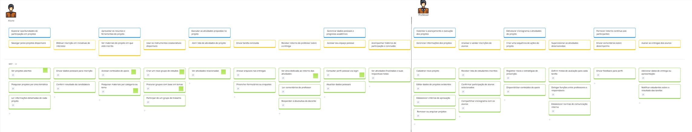
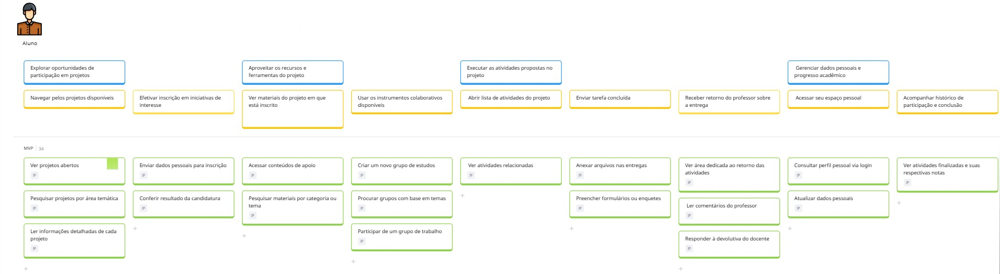
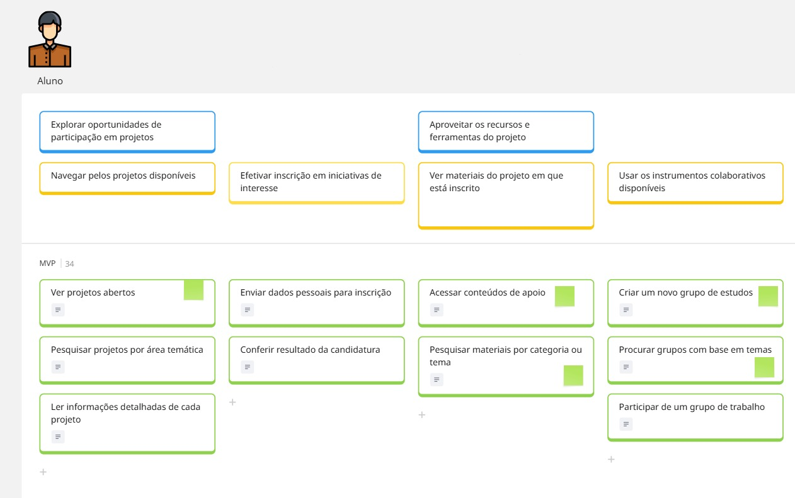
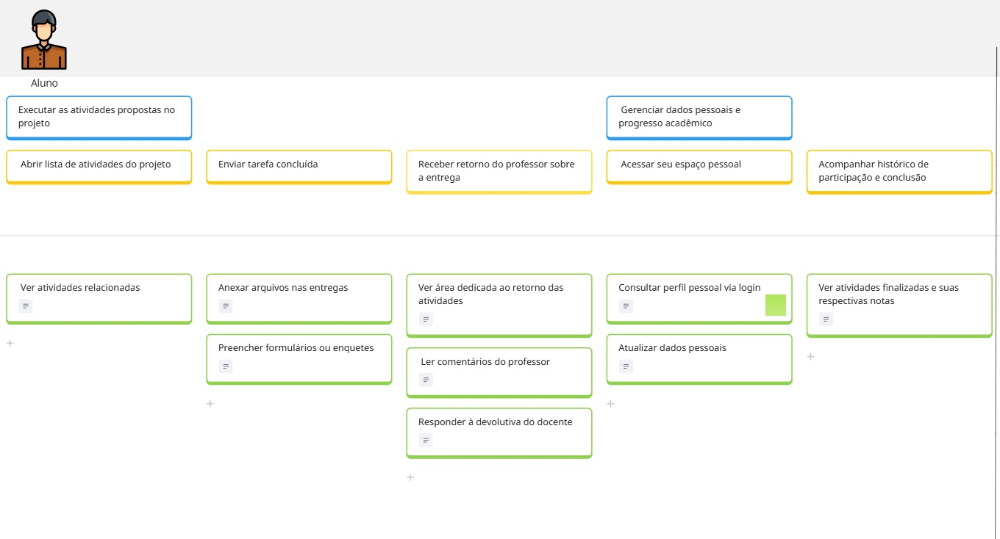
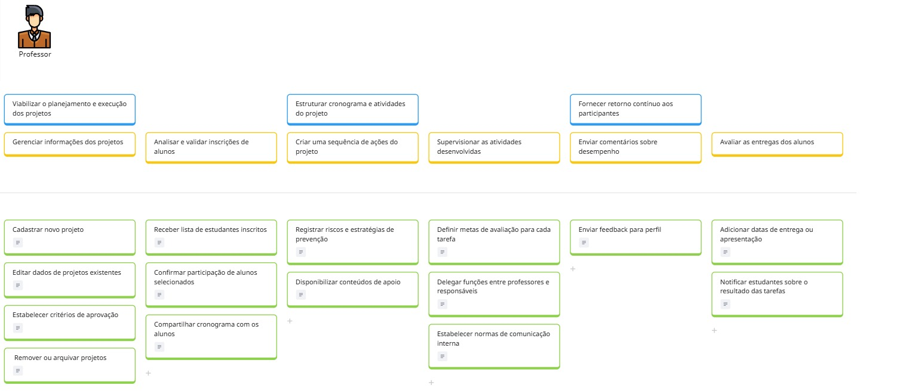
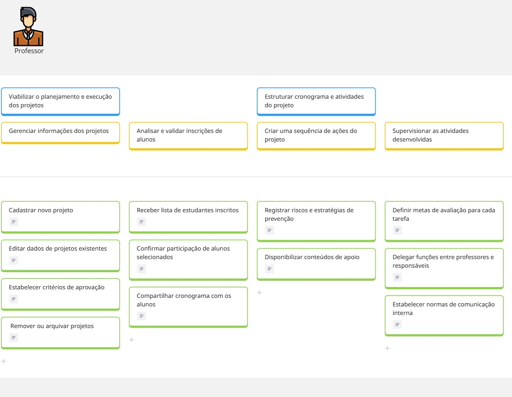
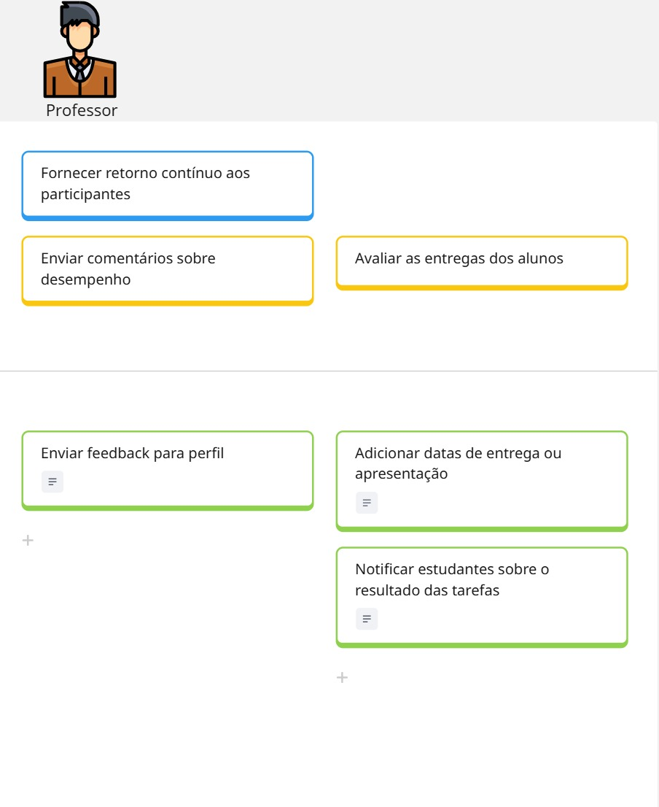

1. User Story Mapping (USM) - EduConnect
1.1. Sobre o User Story Mapping
O User Story Mapping (USM) é uma técnica visual e colaborativa empregada no desenvolvimento de software para estruturar e priorizar histórias de usuário de maneira clara e estratégica. Criada por Jeff Patton, essa abordagem possibilita às equipes construírem um mapa narrativo que ilustra como os usuários interagem com o produto.
O USM organiza as histórias em camadas hierárquicas, nas quais as atividades principais formam uma linha do tempo horizontal (representando a jornada do usuário), e abaixo delas são posicionadas histórias menores e tarefas correlatas, ordenadas por prioridade. Isso contribui para a compreensão das funcionalidades mais importantes para atingir os objetivos do negócio e suprir as demandas dos usuários, facilitando as decisões sobre o que deve ser entregue em cada fase do projeto.
Além de auxiliar na definição de prioridades e no planejamento de entregas (releases), o User Story Mapping proporciona uma visão abrangente do produto, promovendo um entendimento comum entre as partes interessadas e as equipes de desenvolvimento. Ele estimula a cooperação entre diferentes setores e evidencia como cada funcionalidade impacta na experiência do usuário.
A técnica também permite identificar falhas ou etapas desnecessárias, assegurando que o backlog esteja alinhado com os objetivos estratégicos e que os esforços sejam direcionados às funcionalidades de maior valor. Por ser uma abordagem flexível e iterativa, o USM se adapta perfeitamente a metodologias ágeis, sendo ideal para projetos dinâmicos e com foco no cliente.
1.2. USM realizado para o EduConnect
Resumo do Produto: EduConnect
O Quê
O EduConnect é uma plataforma digital desenvolvida para a gestão e realização de projetos educacionais interdisciplinares e atividades extracurriculares. Suas principais funcionalidades envolvem:
- Integração de Ferramentas: Une comunicação, monitoramento de progresso e gestão de recursos em um único ambiente.
- Interface Intuitiva: Criada para atender às expectativas de usabilidade de alunos, pais e professores.
- Acessibilidade Financeira: Pensada para ser uma alternativa viável, especialmente para instituições com orçamento limitado.
O produto procura solucionar desafios como:
- A fragmentação na gestão de projetos.
- A falta de integração entre stakeholders.
- A dificuldade de envolver os alunos em projetos relevantes.
Por Quê
Os principais benefícios do EduConnect incluem:
- Melhoria na Colaboração: Estimula a interação entre professores, estudantes, pais e profissionais externos.
- Eficiência no Gerenciamento: Centraliza dados e otimiza a gestão de projetos educacionais.
- Engajamento dos Alunos: Oferece ferramentas modernas que incentivam a participação ativa e o aprendizado significativo.
- Inclusão dos Pais: Proporciona visibilidade sobre o desenvolvimento dos filhos e cria oportunidades de envolvimento direto.
- Desenvolvimento de Habilidades: Estimula uma aprendizagem colaborativa, prática e integrada.
As etapas seguintes, como a definição de Para Quem e a identificação dos atores, foram realizadas colaborativamente com a equipe utilizando a ferramenta Miro.
USM Completo

USM - Aluno
Histórias relacionadas a persona "Aluno"   
USM - Professor
Histórias relacionadas a persona "Professor"   
USM - Miro
Segue o USM no miro para melhor visualização
| Data | Versão | Descrição | Autor |
|---|---|---|---|
| 14/06/25 | 1.0 | Criação da um Miro | Anne Capdeville & Guilherme Zanella |
| 15/06/25 | 1.1 | Adição do texto | Anne Capdeville & Guilherme Zanella |
| 13/06/25 | 1.2 | Atualizações da Issue 23 | Marcos Bezerra |